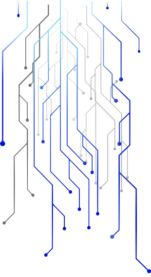
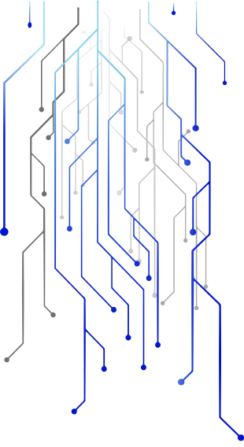

Responsive Sites
WordPress Themes
Vesta is a custom built WordPress theme that was started as a school project and has continued as a freelance project. As the Technical Lead for the group portion of the project, I was responsible for merging my team members' code, maintaining functionality and resolving merge conflicts. Our team worked effectively in a Scrum environment to complete the desktop version on schedule. The mobile site is currently in progress. Please check back later when the site goes live!
InhabiTENT is a WordPress theme built from scratch for a fictional camping gear company. This solo project familiarized me with PHP, WordPress’s built-in functions and its hierarchy. It also provided me with an opportunity to hone my styling skills using Sass.
The InhabiTENT theme is optimized for desktop screens. In order to view it at its best please revisit this site from a larger screen.